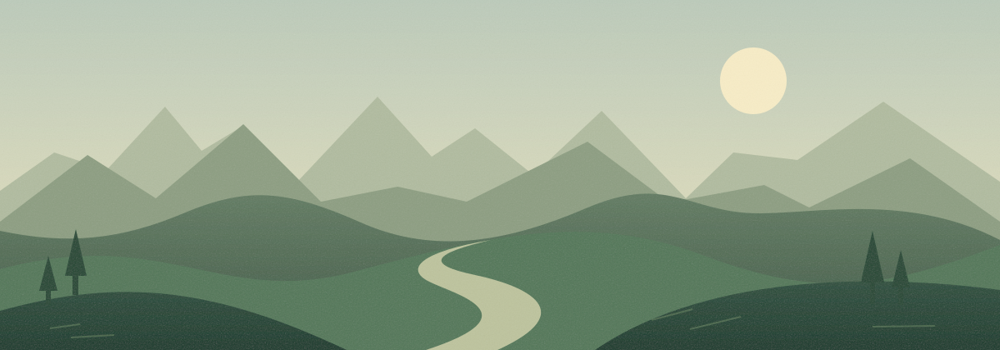

A local studio for AI-generated oners
Many generations.
One continuous shot.
Keep the feeling of one unbroken take. Smooth the little shifts in framing and color between AI video generations, right on your Mac.
Local processing. No API key needed. Just your shot.
Small shifts. A smoother story.

From stitched to continuous
Stay with the shot.
You’ve made the world. Seamstress helps the joins feel like they belong in it.
- 01
Bring your oner.
Drop in the video you’ve already stitched together. One file is all you need. Seamstress finds candidate joins across the timeline.
- 02
Find the flow.
Review each seam. Match framing and color, adjust the correction, and compare before and after to see what feels right.
- 03
Let it play.
Watch the full take, then export at the original resolution and frame rate. Your timing and original audio come along.
What’s an AI-generated oner?
An oner is one continuous shot. With AI video, you can build one by extending a shot through several generations. Each continuation can introduce a small change in framing or color. Seamstress helps smooth those joins in the video you’ve already assembled.
Does my footage stay on my Mac?
Yes. The standard detection, correction, preview, and export workflow runs locally. The Mac app includes its processing engine and FFmpeg, so you don’t need to install Python or provide an API key.
Can it fix every kind of seam?
Seamstress is built for small framing, camera, and color inconsistencies. A changed character, gesture, or scene can still be visible. Review the correction previews before you export; an invisible join isn’t guaranteed.
What footage can I use?
Start with a single stitched video. The engine supports constant-frame-rate, square-pixel, 8-bit SDR footage. It isn’t an HDR mastering workflow. See the desktop guide for supported inputs and export details.
Made for the next take
Keep the story going.
Your next continuous shot starts with a little stitching.